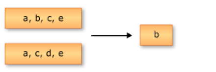
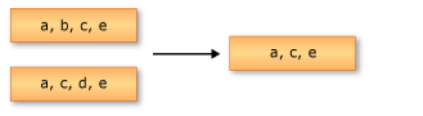
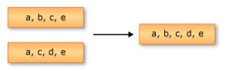
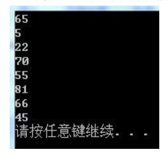
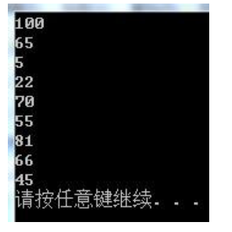

Select操作符对单个序列或集合中的值进行投影. 返回 IEnumerable<类名>
//查询语法
var query =
from e in db.Employees
where e.FirstName.StartsWith("M")
select e;
//方法语法
var q =db.Employees.Where(e => e.FirstName.StartsWith("M")).Select(e => e);
当然，你也可以返回单个列
var query = from e in db.Employees
where e.FirstName.StartsWith("M")
select e.FirstName;
你也可以返回序列中的某几列
var query =
from e in db.Employees
where e.FirstName.StartsWith("M")
select new
{
e.FirstName,
e.LastName,
e.Title
};
SelectMany操作符提供了将多个from子句组合起来的功能，它将每个对象的结果合并成单个序列。
//查询语法
var query =from e in db.Employees
from o in e.Orders
select o;
//方法语法
var q =db.Employees.SelectMany(e => e.Orders);
Where是限制操作符，它将过滤标准应用在序列上，按照提供的逻辑对序列中的数据进行过滤。Where操作符不启动查询的执行。当开始对序列进行遍历时查询才开始执行，此时过滤条件将被应用到查询中
排序操作符，包括OrderBy、OrderByDescending、ThenBy、ThenByDescending和Reverse，提供了升序或者降序排序。
OrderBy操作符将序列中的元素按照升序排列
//查询语法
var query =
from e in db.Employees
orderby e.FirstName
select e;
//方法语法
var q =
db.Employees
.OrderBy(e => e.FirstName)
.Select(e => e);
ThenBy操作符实现按照次关键字对序列进行升序排列
//查询语法
var query =from e in db.Employees
orderby e.FirstName,e.LastName
select e;
//方法语法
var q =
db.Employees
.OrderBy(e => e.FirstName)
.ThenBy(e => e.LastName)
.Select(e => e);
ThenByDescending操作符实现按照次关键字对序列进行降序排列
//查询语法
var query =
from e in db.Employees
orderby e.FirstName,e.LastName descending
select e;
//方法语法
var q =
db.Employees
.OrderBy(e => e.FirstName)
.ThenByDescending(e => e.LastName)
.Select(e => e);
Reverse将会把序列中的元素按照从后到前的循序反转。需要注意的是，Reverse方法的返回值是void
var q =
db.Employees
.Select(e => e.FirstName)
.ToList();
q.Reverse();
联接是指将一个数据源对象与另一个数据源对象进行关联或者联合的操作。这两个数据源对象通过一个共同的值或者属性进行关联。LINQ有两个联接操作符：Join和GroupJoin。
Join操作符类似于T-SQL中的inner join，它将两个数据源相联接，根据两个数据源中相等的值进行匹配
//查询语法
var query =
from p in db.Products
join c in db.Categories on p.CategoryID equals c.CategoryID
where p.CategoryID == 1
select p;
//方法语法
var q =
db.Products
.Join
(
db.Categories,
p => p.CategoryID,
c => c.CategoryID,
(p, c) => p
)
.Where(p => p.CategoryID == 1);
GroupJoin操作符常应用于返回“主键对象-外键对象集合”形式的查询，例如“产品类别-此类别下的所有产品
//查询语法
var query =
from c in db.Categories
join p in db.Products on c.CategoryID equals p.CategoryID into r
select new
{
c.CategoryName,
Products = r
};
//方法语法
var q =
db.Categories
.GroupJoin
(
db.Products,
c => c.CategoryID,
p => p.CategoryID,
(c, p) => new
{
c.CategoryName,
Products = p
}
);
分组是根据一个特定的值将序列中的元素进行分组。LINQ只包含一个分组操作符：GroupBy。 下面的示例中使用了产品表，以CategoryID作为分组关键值，按照产品类别对产品进行了分组。
//查询语法
var query =
from p in db.Products
group p by p.CategoryID;
//方法语法
var q =
db.Products
.GroupBy(p => p.CategoryID);
串联是一个将两个集合联接在一起的过程。在LINQ中，这个过程通过Concat操作符来实现。
//方法语法
var q =
db.Products
.Select(p => p.ProductName)
.Concat
(
db.Categories.Select(c => c.CategoryName)
);
聚合函数将在序列上执行特定的计算，并返回单个值，如计算给定序列平均值、最大值等。共有7种LINQ聚合查询操作符：Aggregate、Average、Count、LongCount、Max、Min和Sum。
Aggregate操作符对集合值执行自定义聚合运算。例如，需要列出所有产品类别清单，每个类别名称之间用顿号连接
//方法语法
var q =
db.Categories
.Select(c => c.CategoryName)
.ToArray()
.Aggregate((current, next) => String.Format("{0}、{1}", current, next));
//等价于
var query =
db.Categories
.Select(c => c.CategoryName)
.ToArray();
string r = String.Empty;
foreach (var item in query)
{
r += "、";
r += item;
}
r = r.Substring(1);
求集合中元素的平均值，返回值类型double
求集合中元素的个数，返回值类型Int32
求集合中元素的个数，返回值类型Int64
求集合中元素的最大值
求集合中元素的最小值
求集合中元素的和
LINQ 中的集合操作符是指根据相同或不同集合（或集）中是否存在等效元素来生成结果集的查询操作，一共有4种：
从集合移除重复值
返回差集，差集是指位于一个集合但不位于另一个集合的元素。
返回交集，交集是指同时出现在两个集合中的元素。
返回并集，并集是指位于两个集合中任一集合的唯一的元素
Empty操作符返回一个指定类型的空集合。这里的空不是null，而是元素数量为0的集合
var q = Enumerable.Empty<int>();
Console.WriteLine(q == null);
Console.WriteLine(q.Count());
DefaultIfEmpty将空集合替换为具有默认值的单一实例集合。执行此方法获得的集合将至少含有一个元素，这是因为DefaultIfEmpty方法需要两个参数，第一个参数是一个泛型集合，第二个参数是相应类型的单个元素，如果第一个参数中不含有任何元素，它将返回第二个参数指定的单个元素。
var q =
Enumerable.DefaultIfEmpty
(
db.Employees
.Where(e => e.FirstName.StartsWith("Aaf")) //更改此处的条件可获得不同的集合
, new Employees() { FirstName = "Sunny D.D" }
);
Range操作符用于生成指定范围内的整数的序列。它需要两个参数，第一个参数是序列开始的整数值，第二个参数是序列中整数的数量
var q =
Enumerable.Range(0, 10);
foreach (var item in q)
{
Console.WriteLine(item);
}
Repeat操作符用于生成包含一个重复值的集合。它需要两个参数，第一个参数是任意类型的元素，第二个参数是生成的序列中所包含此元素的数量
var q =
Enumerable.Repeat(0, 10);
foreach (var item in q)
{
Console.WriteLine(item);
}
转换操作符是用来实现将输入对象的类型转变为序列的功能。名称以“As”开头的转换方法可更改源集合的静态类型但不枚举（延迟加载）此源集合。名称以“To”开头的方法可枚举（即时加载）源集合并将项放入相应的集合类型。
所有实现了IEnumerable<T<接口的类型都可以调用此方法来获取一个IEnumerable<T<集合。此方法一般仅用于实现类中的方法与IEnumerable<T>接口方法重名时。例如，实现类Test中有一个Where方法，当使用Test对象调用Where时，将执行Test自身的Where方法过程。如果要执行IEnumerable<T>的Where方法，便可以使用AsEnumerable进行进行转换后，再调用Where方法即可。当然，将实现类Test隐式转换为IEnumerable<T<接口，再调用接口的Where方法也能达到同样的效果。
class AsEnumerableTest<T> : List<T>
{
public void Where(Func<T, bool> func)
{
Console.WriteLine("AsEnumerableTest的Where方法");
}
}
public static void AsEnumerable()
{
AsEnumerableTest<int> q = new AsEnumerableTest<int>() { 1,2,3,4 };
q.Where(r => r < 3);
//q.AsEnumerable().Where(r => r < 3);
//IEnumerable<int> i = q;
//i.Where(r => r < 3);
}
Cast<T> 方法通过提供必要的类型信息，可在IEnumerable(非泛型)的派生对象上调用Cast<T> 方法来获得一个IEnumerable<T>对象
ArrayList array = new ArrayList();
array.Add("Bob");
array.Add("Jack");
array.Add(1);
foreach (var item in array.Cast<string>())
{
Console.WriteLine(item);
}
运行此代码，可以输出“Bob”、“Jack”，然后会报出一个异常“无法将int强制转换为string”，这说明Cast方法也是延迟执行实现的，只有在枚举过程中才将对象逐个强制转换为T类型。
OfType <T> 方法通过提供必要的类型信息，可在IEnumerable(非泛型)的派生对象上调用OfType <T> 方法来获得一个IEnumerable<T>对象。执行OfType<T>方法将返回集合中强制转换类型成功的所有元素。也就是说，OfType<T>方法与Cast<T> 方法的区别在于，如果集合中的元素在强制转换失败的时候会跳过，而不是抛出异常。
ToArray 操作符可以在IEnumerable<T> 类型的任何派生对象上调用，返回值为T类型的数组。
ToDictionary操作符根据指定的键选择器函数，从IEnumerable<T>创建一个Dictionary<TKey, TValue>。
var q =
db.Categories
.ToDictionary
(
c => c.CategoryID,
c => c.CategoryName
);
foreach (var item in q)
{
Console.WriteLine("{0} - {1}",item.Key,item.Value);
}
需要注意的是，如果省略ToDictionary方法的第二个参数（值选择函数），那么Value将会保存一个类别对象。还有，如果Key为null，或者出现重复的Key，都将导致抛出异常。
ToList操作符可以在IEnumerable<T> 类型的任何派生对象上调用，返回值为List<T>类型的对象。
ToLookup操作符将创建一个 Lookup<TKey, TElement>对象，这是一个one-to-many集合，一个Key可以对应多个Value。以下的示例以产品表的所有数据作为数据源，以类别ID作为Key调用了ToLookup方法，然后遍历返回的Lookup<TKey, TElement>对象，输出了类别ID以及此类别下的所有产品名称
var q =
db.Products
.ToLookup
(
p => p.CategoryID,
p => p.ProductName
);
foreach (var item in q)
{
Console.WriteLine(item.Key);
foreach (var p in item)
{
Console.WriteLine(p);
}
}
可以看出，ToLookup操作与GroupBy操作很相似，只不过GroupBy是延迟加载的，而ToLookup是即使加载
First操作将返回序列中的第一个元素。如果序列中不包含任何元素，则First
//无参
var query =db.Employees.First();
//有参
var q =db.Employees.First(e => e.FirstName.StartsWith("S"));
Console.WriteLine(q.FirstName);
使用了First<T>方法的无参方式与有参方式。First<T>的有参方式中可以指定一个条件，操作将返回序列中满足此条件的第一个元素.从查询结果上看，source.First<T>(条件)方法与source.Where(条件).First<T>()是一样的，但是需要注意“First<T>(条件)操作将返回序列中满足此条件的第一个元素”，这将忽略后面的遍历操作，效率更高
FirstOrDefault方法将返回序列中的第一个元素；如果序列中不包含任何元素，则返回默认值。它也可以像First方法一样传递一个条件
如果调用FirstOrDefault方法的序列为空，抛出异常
如果序列成功转换为List<T>，并且元素数量大于0，则返回首个元素,如果序列没有成功转换为List<T>，则尝试获取序列的遍历器，然后再调用遍历器的MoveNext方法，如果返回值为true，则返回当前的元素。如果上述操作都没有执行，则使用default(T)关键字返回类型T的默认值
在泛型类和泛型方法中产生的一个问题是，在预先未知以下情况时，如何将默认值分配给参数化类型 T：
T 是引用类型还是值类型。
如果 T 为值类型，则它是数值还是结构。 给定参数化类型 T 的一个变量 t，只有当 T 为引用类型时，语句 t = null 才有效；只有当 T 为数值类型而不是结构时，语句 t = 0 才能正常使用.解决方案是使用 default 关键字，此关键字对于引用类型会返回 null，对于数值类型会返回零。对于结构，此关键字将返回初始化为零或 null 的每个结构成员，具体取决于这些结构是值类型还是引用类型。
Last方法将返回序列中的最后一个元素。使用方法参照First。
LastOrDefault方法将返回序列中的最后一个元素；如果序列中不包含任何元素，则返回默认值。使用方法参照FirstOrDefault。
ElementAt方法返回序列中指定索引处的元素。使用方法参照First。需要注意的是如果索引超出范围会导致异常。
ElementAtOrDefault方法将返回序列中指定索引处的元素；如果索引超出范围，则返回默认值。使用方法参照FirstOrDefault。
Single方法的无参形式将从一个序列中返回单个元素，如果该序列包含多个元素，或者没有元素数为0，则会引发异常。也就是说，在序列执行Single方法的无参形式时，必须保证该序列有且仅有一个元素。Single方法的有参形式将从一个序列中返回符合指定条件的唯一元素，如果有多个元素，或者没有元素符合这一条件，则会引发异常。
var q =
db.Employees
.Single();
var query =
db.Employees
.Single(e => e.FirstName.StartsWith("S"));
Console.WriteLine(query.FirstName);
SingleOrDefault方法的无参形式将从一个序列中返回单个元素。如果元素数为0，则返回默认值。如果该序列包含多个元素，则会引发异常。
SingleOrDefault方法的有参形式将从一个序列中返回符合指定条件的唯一元素，如果元素数为0，则返回默认值；如果该序列包含多个元素，则会引发异常。SingleOrDefault的使用方式与Single相同。
需要注意的是，Single方法与SingleOrDefault方法都是即时加载的，在代码进行到方法所在位置时，如果引发了异常，会立刻抛出。
All方法用来确定是否序列中的所有元素都满足条件。
string[] source1 = new string[] { "A", "B", "C", "D", "E", "F" };
string[] source2 = new string[] { "A", "A", "A", "A", "A", "A" };
Console.WriteLine(source1.All(w => w == "A")); //console will print "False"
Console.WriteLine(source2.All(w => w == "A")); //console will print "True"
Any方法的无参方式用来确定序列是否包含任何元素。如果源序列包含元素，则为 true；否则为 false。
Any方法的有参方式用来确定序列中是否有元素满足条件。只要有一个元素符合指定条件即返回true，如果一个符合指定条件的元素都没有则返回false
string[] source1 = new string[] { "A", "B", "C", "D", "E", "F" };
string[] source2 = new string[] { "A", "A", "A", "A", "A", "A" };
Console.WriteLine(source1.Any(w => w == "A")); //console will print "True"
Console.WriteLine(source2.Any(w => w == "A")); //console will print "True"
Contains方法用来确定序列是否包含满足指定条件的元素。如果有返回true，否则返回false
string[] source1 = new string[] { "A", "B", "C", "D", "E", "F" };
Console.WriteLine(source1.Contains("A")); //console will print "True"
LINQ 中的分区指的是在不重新排列元素的情况下，将输入序列划分为两部分，然后返回其中一个部分的操作。
Take(int n)方法将从序列的开头返回数量为n的连续元素。
var q = source.Take(5); //从一个序列中返回其前五个元素
TakeWhile方法执行时将逐个比较序列中的每个元素是否满足指定条件，直到碰到不符合指定的条件的元素时，返回前面所有的元素组成的序列
int[] source = new int[] { 86, 2, 77, 94, 100, 65, 5, 22, 70, 55, 81, 66, 45 };
var q = source.TakeWhile(i => i < 100);
Skip(int n)方法将跳过序列开头的n个元素，然后返回其余的连续元素.
SkipWhile方法执行时将逐个比较序列中的每个元素是否满足指定条件，直到碰到不符合指定的条件的元素时，返回其余所有的元素组成的序列
int[] source = new int[] { 86, 2, 77, 94, 100, 65, 5, 22, 70, 55, 81, 66, 45 };
var q = source.SkipWhile(i => i < 100);
